La app oficial del 30 aniversario: con vuestra imagen, pensada para funcionar sin cobertura en Villarrobledo, que acompaña al público antes, durante y después del festival. Y que convierte a vuestros patrocinadores en ingresos nuevos para el festival.
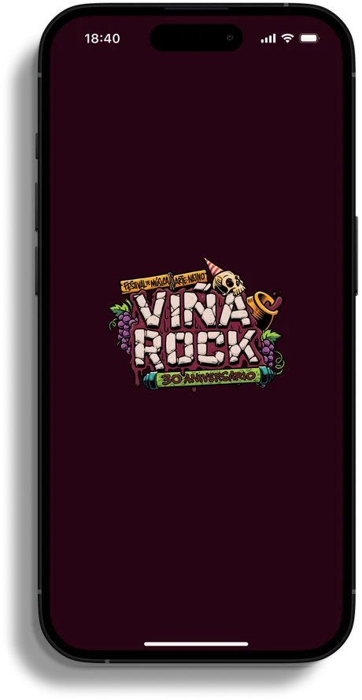
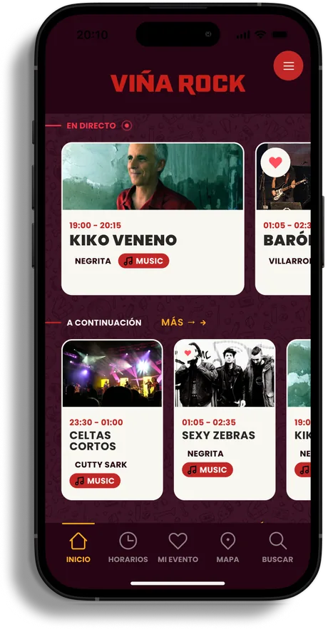
“30 años de música, de barro, de amigos, de kilómetros, de amaneceres y de miles de historias que se han quedado para siempre.”Viña Rock, anuncio del 30 aniversario
Una edición así merece algo que el público lleve en el bolsillo durante los tres días, y que siga ahí cuando se apaguen los escenarios. Esa es la idea de esta propuesta.
Hemos diseñado varias pantallas con la identidad del 30 aniversario, los escenarios reales y la parrilla de este año como ejemplo.
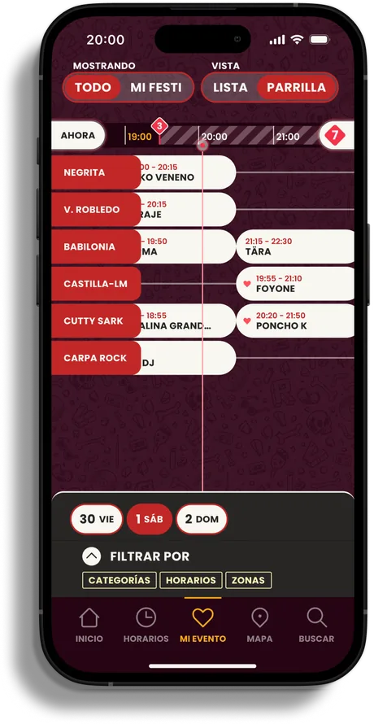
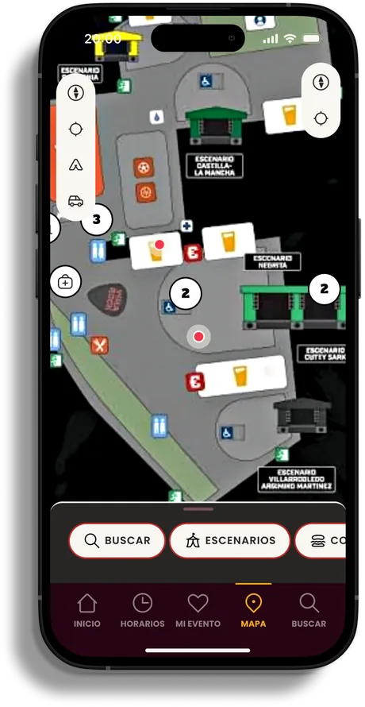
Pantallas de ejemplo. El diseño final lo cerramos con vuestro equipo: colores, tipografías, mapa ilustrado y el sello del 30 aniversario donde queráis.
VIKIN es una empresa de desarrollo especializada en festivales y eventos outdoor. Construimos apps con la marca de cada festival, que funcionan sin conexión y que el equipo gestiona sin complicarse desde un portal muy sencillo.
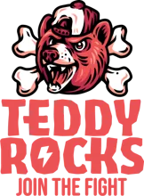
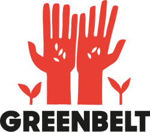
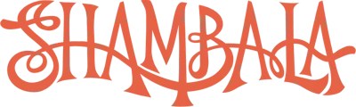
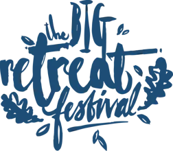
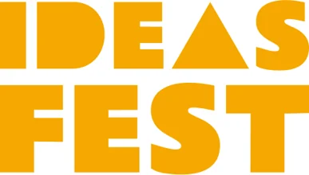
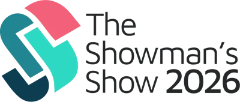
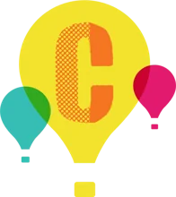
Con miles de personas en el recinto la red se cae. La app sigue funcionando: horarios, mapa y búsqueda sin conexión.
No hace falta registrarse. La analítica que veis siempre es agregada y anónima.
Nada de plantillas genéricas. Logo, colores, texturas, iconos y mapa ilustrado con la identidad del festival.
Notificaciones y novedades que llegan a todo el público, sin depender de algoritmos de redes.
El inicio cambia según el momento: quién toca ahora, qué hay cerca, cómo volver a la tienda por la noche.
Es lo que más destacan nuestros clientes. Y como somos desarrolladores, lo que pedís se construye.
El 30 aniversario atrae más atención, más público que vuelve y más interés de marcas. Es el mejor momento para estrenar un canal propio con vuestro público.
Mucha gente acampa y pasa el fin de semana entero dentro. Encontrar la tienda de noche, las duchas o el bus de vuelta sin cobertura es justo donde la app marca la diferencia.
Carpa Rock, Negrita, Cutty Sark, Villarrobledo, Castilla-La Mancha, Babilonia y Carpa Viña Dub. Con más de 100 artistas, la agenda personal y el aviso de solapes son casi obligatorios.
Buses, bono duchas, consignas, pulsera cashless, zona de descanso, Feria del Vino, Mini Viña… Hoy esa información está repartida. En la app, a un toque y sin conexión.
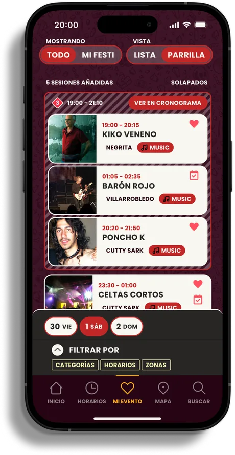
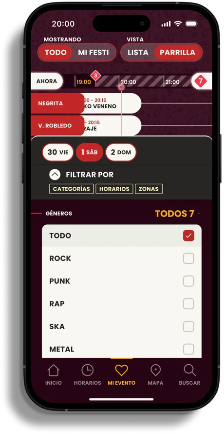
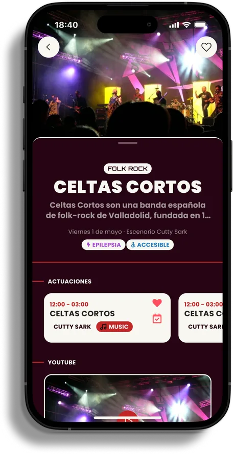
Vuestras marcas ya ponen nombre a escenarios. En la app pueden tener algo más valioso que un logo: aparecer justo cuando el público las necesita, y con datos para demostrarlo.
El mapa y la búsqueda son los sitios que más se usan en un festival. Ahí está el inventario.
El nombre del patrocinador sale en la parrilla, en cada ficha de concierto y en el mapa. Visible cientos de veces por persona.
Un hueco por franja horaria o por día para la marca, el merch del 30 aniversario o una promo.
Barras, food trucks y activaciones que se encuentran primero. Se miden taps y “cómo llegar”.
Happy hour en una barra, regalo por visitar un stand. Campañas con canjes medibles.
Un par de mensajes bien colocados, por ejemplo al amanecer o antes del cabeza de cartel. Con límite para no saturar.
Una marca asociada a algo que ayuda de verdad: la vuelta a la tienda, los puntos de agua o la ruta de la Feria del Vino.
Enlaces directos a comprar los servicios que ya vendéis. Menos preguntas al staff y más conversión.
Un informe sencillo por marca con visitas, taps y canjes. Así el patrocinio de 2028 se vende solo.
La app puede pagarse sola. Con parte de este inventario vendido a vuestros patrocinadores actuales, la app deja de ser un gasto y pasa a ser una línea de ingresos. Los detalles y cifras los vemos en una reunión, con vuestros números.
Propuestas para pensar juntos. Algunas ya existen en VIKIN; otras las construiríamos para vosotros.
Sellos por escenario o por activación de marca. Al completarlo, sorteo o merch del aniversario, con patrocinador.
Un archivo con los carteles y momentos de cada edición en el feed. Contenido que la gente comparte y que calienta la previa.
La app se instala meses antes: anuncios del cartel, horarios, servicios y enlaces de compra en un canal propio.
Todo se descarga antes. Las actualizaciones llegan rápido incluso con mala cobertura.
Se abre y se usa. Nadie deja el festival a medias por no acordarse de una contraseña.
Lo que publicáis llega a todo el mundo. El canal es vuestro, no de una red social.
Feed de novedades, aftermovie, anuncios de cartel y preventa de 2028. Y campañas de patrocinadores también fuera del fin de semana.
Integraciones con gestión de artistas (Crescat), ticketing y pagos. Sin duplicar trabajo: la misma información puede alimentar vuestra web.
“VIKIN superó nuestras expectativas. El equipo hizo todo lo posible para que funcionara a la perfección, con un soporte excelente y una experiencia fluida tanto para la organización como para los asistentes.”
“Su dedicación, creatividad, rapidez de respuesta y apertura al feedback, incluso cuando eso significaba adaptarse a nuestras particularidades, ha sido inmejorable.”
“Organizar un festival implica muchas piezas en movimiento, y ha sido un alivio lo fácil que nos han hecho todo el proceso. El equipo ha sido cercano y muy sencillo de coordinar.”
Vemos juntos qué necesita el festival y qué marcas pueden entrar en la app.
Cerramos la imagen del 30 aniversario, el mapa y los paquetes para patrocinadores.
La app sale con los anuncios de cartel y horarios, y empieza a sumar descargas.
Soporte durante los tres días e informe final para vosotros y cada marca.
Una app que el público use de verdad y que el festival pueda rentabilizar con sus propias marcas. ¿Lo hablamos?
Datos del festival según información pública de Viña Rock (fechas 2027, escenarios y servicios). Las pantallas son un ejemplo de diseño y los nombres de marcas aparecen solo como ilustración de posibles formatos. Los testimonios son de clientes reales de VIKIN.